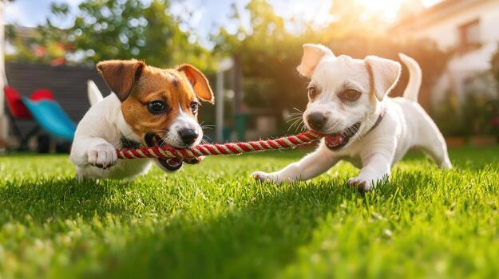

Rescate Urbano
Intervenimos en situaciones de abandono y maltrato animal en la vía pública.

En RescatAR nos dedicamos al rescate de animales en situación de calle, brindándoles atención veterinaria y la posibilidad de encontrar un hogar.
Intervenimos en situaciones de abandono y maltrato animal en la vía pública.
Promovemos la adopción consciente y buscamos familias para cada mascota.
Realizamos campañas para fomentar el cuidado y respeto por los animales.